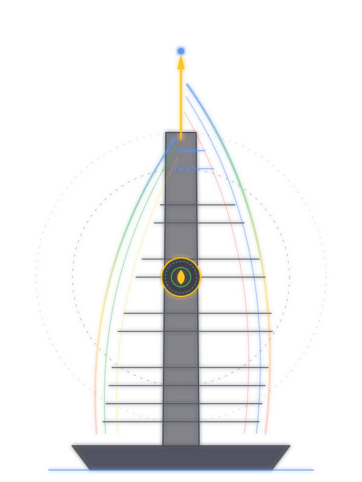

A new Journey begins here.
A community for learners, developers, and innovators at Universitas Negeri Makassar. Learn Google technologies, collaborate on impactful real-world projects, and grow together.

About GDGoC UNM
Google Developer Group On Campus (GDSC / GDGoC) Universitas Negeri Makassar is a student community focusing on Google technologies.
Empowering Student Builders at UNM
We are open to all students across all levels who want to learn, collaborate, and grow as developers. Through peer-to-peer learning, GDSC UNM members have the opportunity to build practical skills, develop real-world projects, and become part of Google's global developer community.
By bridging academic theory with industry practices, we enable students from all faculties to create digital solutions with real local and global impact.
Connect
Meet students interested in developer technologies across campus, connect with alumni, and build industry relationships.
Learn
Learn a range of technical topics and gain new skills through hands-on workshops, training sessions, and Weekly Classes.
Grow
Apply new learnings to build real solutions for local problems, showcase your work in the Google Solution Challenge, and advance your career.
Our Activities
Regular activities bringing together core teams, Google Developer Academy students, and the community to learn, share, and grow together. Here, we explore the latest innovations and tech trends to always stay one step ahead.
Learning Path
Explore 7 specialized career learning paths. Gain real-world software engineering, design, hardware, and AI skills guided by GDGoC UNM core tech leads.
Google Events
Discover various events and competitions from Google that you can join to hone your skills, gain experience, and continue growing in the tech world.
Team
Meet the dedicated 2026/2027 Core Team of GDGoC UNM — 29 members across 5 divisions driving collaboration, innovation, and developer community empowerment at Universitas Negeri Makassar.
Gallery
A glimpse into our journey from team collaboration to inspirational activities. This gallery showcases precious moments of the core team and GDGoC UNM members learning, sharing, and growing together in the spirit of technology and innovation.
Member Stories
Hear directly from students whose learning journey and career aspirations have transformed through GDGoC Universitas Negeri Makassar.
Frequently Asked Questions
Frequently asked questions about GDGoC UNM. Find the answers to your curiosity here.
Come Join GDGoC UNM!
Join GDGoC UNM and grow together with an inspiring tech community. Click “Join Now” to become part of an endless journey of collaboration and learning, open to all students who want to thrive in the world of technology.